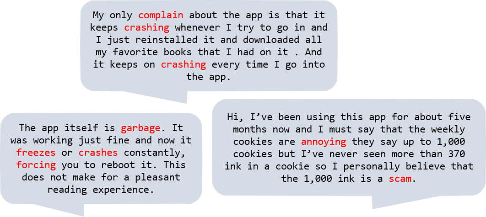

Now that we see the trend in ratings, my next question would be to look at the negative reviews and try to identify what’s the #1 problem users are dealing with.
Identifying Negative Reviews
We could simply use reviews with low star ratings to identify negative reviews, but there are also four- or five-star reviews that sometimes include hidden criticisms of the app, or as I like to call them: “I love it, but…” reviews. For example, this 5-star review talks about an issue with the app crashing. If we filtered on rating, we wouldn’t capture a review like this.
reviews %>% filter(id == 7882943052) %>% select(rating, title, review)
## rating title
## 1 5 App keeps Crashing when I go into it
## review
## 1 My only complain about the app is that it keeps crashing whenever I try to go in and I just reinstalled it and downloaded all my favorite books that I had on it . And it keeps on crashing every time I go into the the app.
So to help identify all negative reviews, I employ sentiment analysis. Sentiment analysis is exactly what it sounds like: taking a body of text and determining whether the underlying sentiment is positive, negative, or neutral. With sentiment analysis, you can get a deeper understanding of public opinion about your company/product/service.
Before running my sentiment analysis, I do some cleaning on the reviews: stripping punctuation, removing uninformative stop words (e.g., “the”, “a”, “and”), as well as other cleaning steps. Ultimately, my “cleaned” reviews look like this:

After cleaning the text, I used the “syuzhet” package in R to calculate a sentiment “score” for each review. For example, words like “garbage” will get negative scores, while a word like “pleasant” gets a postive score. The total gets you to the overall score for the review.
 (These scores are pulled from “lexicons” assembled by literary researchers. I’m using Syuzhet, the default lexicon in the syuzhet package that was developed in the Nebraska Literary Lab.)
(These scores are pulled from “lexicons” assembled by literary researchers. I’m using Syuzhet, the default lexicon in the syuzhet package that was developed in the Nebraska Literary Lab.)
After I calculate a sentiment score for every review, I can identify “negative”, “positive” or “neutral” reviews (i.e., reviews with a negative, positive, or zero sentiment score respectively).
As a sanity check, I plot sentiment by app version. The resulting chart is consistent with our earlier observation that users didn’t seem to like version 5.10.
sent_ver <- reviews %>%
group_by(app_version_clean, sentiment_direction) %>%
summarize(percentage = n())
my_palette <- c(red, yellow, green)
ggplot(sent_ver, aes(fill = sentiment_direction, x = app_version_clean, y = percentage)) +
geom_bar(position = 'fill', stat = 'identity') +
labs(title = 'Sentiment improved through ver. 5.9 but soured with recent updates.',
subtitle = 'Sentiment by App Version',
x = 'App Version',
y = 'Percent of Reviews') +
theme_light() +
theme(panel.grid.major = element_blank(),
panel.grid.minor = element_blank()) +
scale_y_continuous(labels = scales::percent) +
scale_fill_manual(name = 'Sentiment', values = my_palette)

So what are these negative reviews talking about? If we look at a few examples, we can see some pain points that users are experiencing.

Crashes seem to be a common problem, while another user mentioned “ink”, which is Tapas’ in-app currency for purchasing premium content. How do we know what is the #1 problem? To help answer this, I use an algorithm to extract the most common keywords from these negative reviews.
Identifying Common Keywords in Negative Reviews
There are many different algorithms/approaches for identifying key words/topics in text data. A popular approach is the “Rapid Automatic Keyword Extraction” (“RAKE”) algorithm, which identifies the most relevant words and phrases that commonly occur together (i.e., co-occurences).
For this step, I’ll define “negative” reviews as those with (1) a rating lower than 3 stars, or (2) a rating with a negative sentiment score.
I used r’s “udpipe” package to run a RAKE algorithm on these negative reviews. The udpipe package lets us identify words that commonly occur with each other, and it identifies the part-of-speech for each word (i.e., nouns, adjectives, or verbs).
One thing we can do is visualize a word “network”, to see some of the most common nouns, adjectives, and verbs in the negative reviews and what other words are associated with them:
 From this word network, we see that the most common phrase is “read comic”, which makes sense considering that Tapas is an app for reading comcis. We can also see some other interesting associations. The cluster with words like “freeze”, “crash”, “open”, “load”, or “time” indicates performance issues with the app crashing, or even issues with the time it takes to load. Another common association is “spend money”, which may reflect complaints about Tapas’ pay-wall for premium content. These insights are consistent with the example reviews we looked at before.
From this word network, we see that the most common phrase is “read comic”, which makes sense considering that Tapas is an app for reading comcis. We can also see some other interesting associations. The cluster with words like “freeze”, “crash”, “open”, “load”, or “time” indicates performance issues with the app crashing, or even issues with the time it takes to load. Another common association is “spend money”, which may reflect complaints about Tapas’ pay-wall for premium content. These insights are consistent with the example reviews we looked at before.
There also seem to be positive associations: “love story” and “great comic” indicate that people enjoy the content on Tapas.
We can also plot common key phrases in a bar plot.
stats <- keywords_rake(x = complaint_data,
term = 'lemma',
group = 'doc_id',
relevant = complaint_data$upos %in% c('NOUN', 'ADJ', 'VERB'))
stats_chart <- stats %>%
head(15) %>%
arrange(rake) %>%
mutate(keyword = factor(keyword, levels = keyword),
perf_issue = grepl('freeze|crash|fix|bug|time|long', keyword))
my_palette <- c(lightblue, blue)
ggplot(stats_chart, aes(x = keyword, y = rake, fill = perf_issue)) +
geom_col() +
labs(title = 'Common keywords in negative reviews.',
subtitle = 'Common keywords in negative reviews.',
x = 'RAKE',
y = 'Keyword') +
theme_light() +
theme(panel.grid.major = element_blank(),
panel.grid.minor = element_blank(),
legend.position = 'none') +
scale_fill_manual(values = my_palette) +
coord_flip()

The top phrases relate to the function of the app, but after that, most of the phrases seem related to performance issues. Namely, we can see that words/phrases like “fix bug”, “keep freeze”, and “long time” appear frequently in negative reviews. So it looks like performance issues are the most common complaint in negative reviews.
 I currently work in economic consulting, but my first paid job was drawing comics for Tapas Media, a webtoon platform. I used to think that these two jobs were worlds apart. But even though one deals with million-dollar litigations and the other deals with funny drawings and fart jokes, they’re really about the same thing: telling stories. So in a weird way, my first job at Tapas started my journey as a storyteller. Needless to say, the company still holds a place near and dear to my heart.
I currently work in economic consulting, but my first paid job was drawing comics for Tapas Media, a webtoon platform. I used to think that these two jobs were worlds apart. But even though one deals with million-dollar litigations and the other deals with funny drawings and fart jokes, they’re really about the same thing: telling stories. So in a weird way, my first job at Tapas started my journey as a storyteller. Needless to say, the company still holds a place near and dear to my heart.


 The regression shows that across all app versions, performance issues explain about 48 percent of the variance in ratings. It appears that the regression fits better for earlier app versions, but is not a great fit for versions 5.9, 5.10 or 5.12 (removing app versions 5.9, 5.10, and 5.12 bumps the R-squared up to 92 percent). This suggests that although performance explains most of the change in ratings for earlier app versions, other issues besides performance drove the drop in ratings for versions 5.10 and 5.12.
The regression shows that across all app versions, performance issues explain about 48 percent of the variance in ratings. It appears that the regression fits better for earlier app versions, but is not a great fit for versions 5.9, 5.10 or 5.12 (removing app versions 5.9, 5.10, and 5.12 bumps the R-squared up to 92 percent). This suggests that although performance explains most of the change in ratings for earlier app versions, other issues besides performance drove the drop in ratings for versions 5.10 and 5.12.